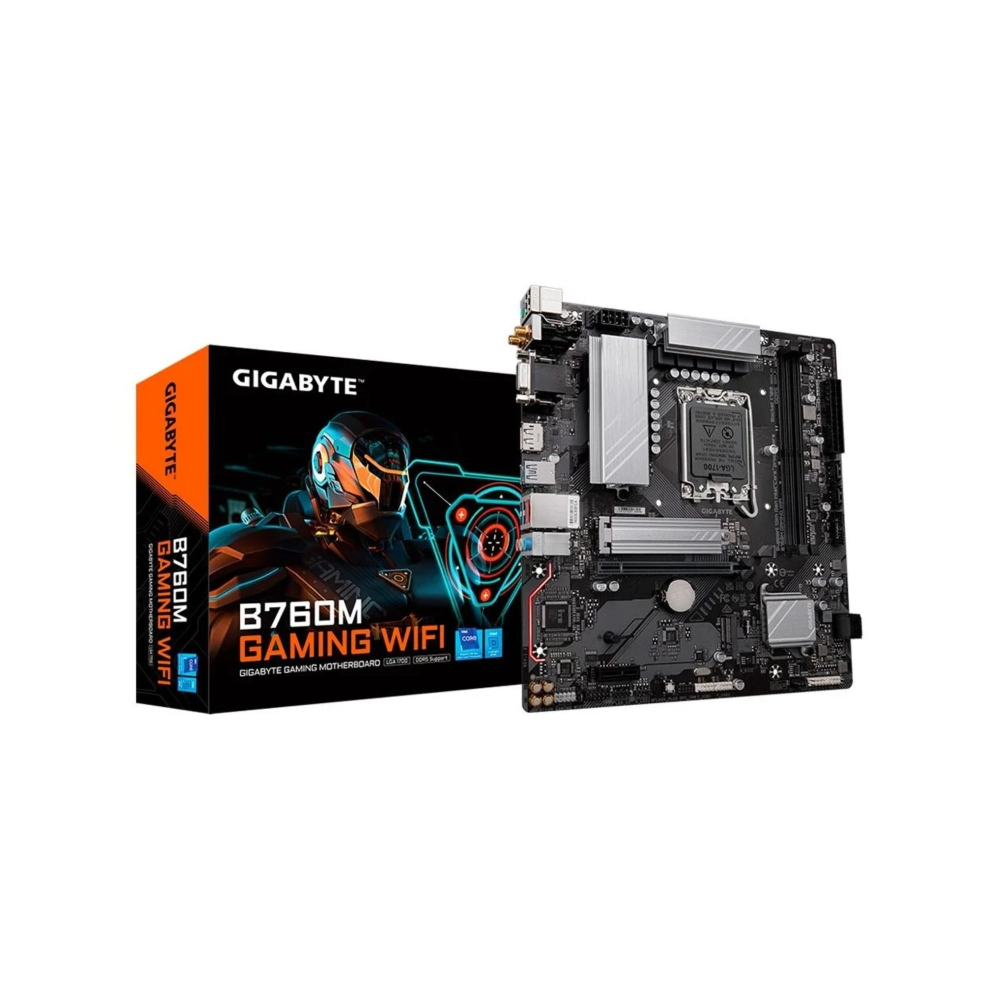

A Placa Mãe Gigabyte B760M Gaming WIFI é uma placa-mãe para montar ou atualizar um computador. Intel LGA 1700 MATX, DDR5, WiFi, Preto - B760M GAMING WIFI, Soquete LGA 1700, Chipset B760. Confira se o soquete e o tipo de memória batem com o seu processador.